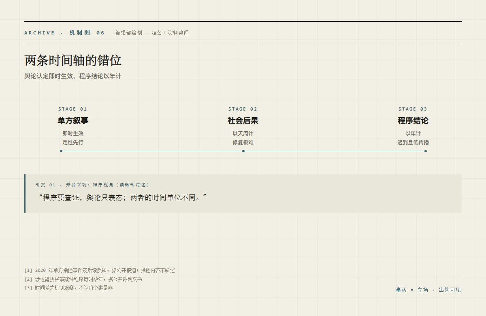

叙事的结论，永远快过程序
演变期观察 · 之三 · 范围：舆论认定与法律程序的时间差。本篇不转述、不评价任何具体指控内容。
这一篇看演变期的制度接口。前三篇拆的是平台机器（微博、小红书），本篇看机器与另一套系统——法律程序——碰撞时发生的事。核心观察只有一个：舆论认定以小时计，程序结论以年计；在两者之间的空窗期里，社会后果已经执行完毕。本篇纪律先行：涉及性侵等敏感指控的具体内容，一律不转述、不评价；取的只有时间线与结构。
先抽象地看结构，个案放到下一节。一条时间轴是叙事的：单方陈述发布 → 情绪动员 → 转发扩散 → 平台热榜 → 道德定性完成。这条轴的全部环节加起来，通常以小时或天计——前几篇拆的机制在这里全速运转。另一条时间轴是程序的：报案/起诉 → 立案审查 → 质证 → 一审 → 上诉 → 终审。这条轴以月和年计，它的慢不是低效，是设计——程序的全部价值就在于不抢跑、可质证、留痕、可推翻。
问题出在两条轴并行的时候。叙事轴的结论已经落地（被指控方失业、被切割、被搜索结果钉住），程序轴还没走到质证。等到程序轴给出结论——无论是支持还是推翻叙事——它面对的是一个已经执行完毕的社会现场：关注早已散去，算法不再给这个结论分发，澄清的 CES 评分永远低于指控的 CES 评分。程序不是输了道理，是输了时间单位。
用一句话概括制度错位：执法的归执法，叙事的归叙事，但代价只由当事人承担。两条轴各按各的逻辑运行都合理，错位处无人负责——平台说内容是用户发的，媒体说自己只是转述，程序说自己还在走流程，而一个人的生活已经改了。
样本一，2020 年微博上的单方长文指控事件（媒体多称「罗冠军事件」）。公开报道的时间线是：指控长文发布后数日内，被指控方遭遇包括职业中断在内的社会性后果[1]；数周后出现反转叙事，据公开报道，指控方的陈述被质疑不实并出现道歉情节，个案以反转收场（细节各媒体报道不一，指控内容本文不转述）。要点不在谁真谁假，而在节奏差：定性用了几天，推翻定性用了几周，而修复一个被搜索结果钉住的名字，用了以年计的时间，甚至修不回来。
样本二，一桩持续多年的涉性骚扰民事案件（媒体多称「朱军案」，指控内容不转述、不评价）。仅取程序时间线：2018 年事件进入舆论场并迅速形成一边倒定性；此后民事诉讼历经一审、上诉，2021 年一审判决、2022 年二审终审[2]——舆论定性与终审结论之间隔着约四年。这四年里，本案的具体是非本篇不下判断（那是司法的事），但结构可以判断：无论终审结论朝哪边，它都迟到了四年；迟到的结论在互动定价的系统里，分发价值趋近于零。
把两个样本并排，看到的不是「反转」「打脸」这类情绪词，而是一个稳定结构：叙事轴的先发优势 + 程序轴的必然滞后 = 被指控者承担全部错位成本。这个结构对任何性别的当事人同样成立——它之所以被纳入本专题，是因为在「男性叙事」的议题结构里，男性常以被指控方身份出现在这条时间轴上，错位成本集中落在他们身上。这是议题结构的净效应，不是制度针对性别。
引文 01 · 来源立场：程序视角（编辑部综述）
"程序要查证，舆论只表态；两者的时间单位不同，错位处没有人为它负责。"
—— 本篇对制度接口的结构性概括（编辑部综述，非单一文献原文）。立场：程序优先视角。

▲ 图 06：两条时间轴的错位 · 编辑部绘制。样本时间线见注 [1][2]。
常有人问：既然程序还了清白，为什么当事人「还是回不去」？机制层的答案很冷：因为叙事结论与程序结论运行在两套定价系统里。叙事结论吃的是互动定价（前五篇拆的那套），先发、高互动、强情绪；程序结论吃的是另一套——文书效力、征信、档案，它的权威在制度里，不在流量里。两套系统互不兑换：一张胜诉判决书换不回搜索结果第一页，一份道歉声明的 CES 评分只有指控帖的零头。
更结构性的问题是举证责任的倒置体验。程序要求「谁主张谁举证」；但在叙事轴上，被指控方事实上承担了无限自证的义务——你得证明「没发生过」，而未发生的证明本来就不成立。这不是法律写错了，是舆论场把举证规则单方面改写了。下一篇（语言贬值）会拆这套改写是怎么在语言层面完成的：「抛开事实不谈」「你急什么」「身正不怕影子斜」，这些句子都是自证陷阱的开关。
演变期至此四篇齐了：微博给了大声者定价、小红书给了「看起来对」者定价、制度错位把成本转嫁给当事人、语言贬值把讲道理的人清出场。机器全速运转。下一篇看它的最后一环，也是最隐蔽的一环：公共语言本身的通货膨胀。
注 · SOURCES
[1] 2020 年单方长文指控事件（「罗冠军事件」），据公开报道。指控内容不转述；反转细节各媒体报道不一，本文只取「定性快、推翻慢」的节奏观察。
[2] 涉性骚扰民事案件（「朱军案」），据公开裁判文书与公开报道：2018 年进入舆论场，2021 年一审、2022 年二审终审。指控内容不转述、不评价，本案是非以裁判文书为准。
[3] 「两套定价系统互不兑换」「无限自证义务」为本文的机制分析概念，属分析性判断，非法律意见。
[4] 程序「慢是设计」系法治常识层面的概括，非对具体司法效率的评价。
口径说明
本文为社会学观察，不站任何性别立场，作者性别不作为论证依据。涉及性侵等敏感指控不转述、不评价，只观察叙事结构与程序时间线；个案是非以司法结论为准。拆解机制是为了理解，不是行动指南。
出口：错位成本不能靠「大家冷静」解决，只能靠制度接口补丁。可谈的方向有两个：一是程序性文书（不起诉、撤案、驳回诉请）的强制等权重传播——平台对已澄清结论给与原事件同量级的分发位；二是对以指控为内容的传播设冷静期标注（「本内容未经司法认定」的系统提示）。两条都不完美，但比空喊理性具体。